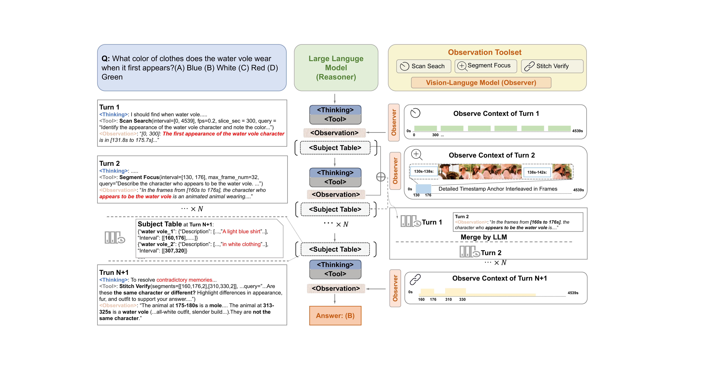
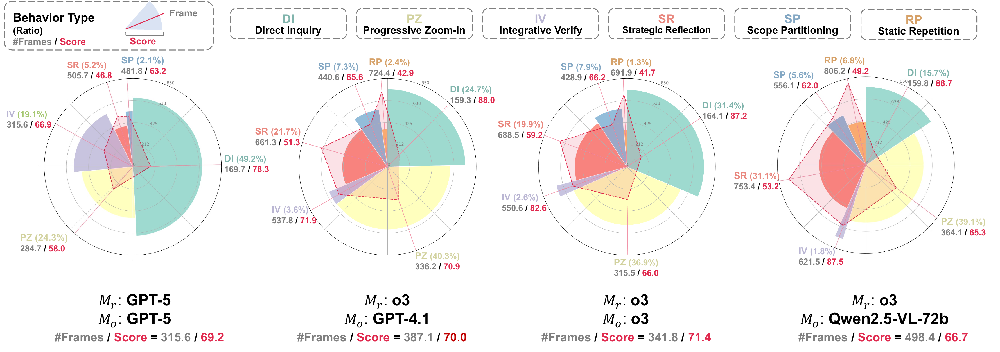

Scan Search
Partition a long interval into slices, sparsely sample each slice, and localize likely evidence.
CVPR 2026
LensWalk turns long-video QA into a reason-plan-observe loop. A language reasoner chooses where to look, how densely to sample, and which visual observer tool to call, then uses timestamped evidence and a subject registry to keep reasoning grounded across turns.

Abstract
The dense temporal nature of video makes static context selection brittle. LensWalk gives an LLM reasoner direct control over visual observation: at each step it specifies temporal scope, sampling density, and the observer tool to invoke. This progressive evidence-gathering framework works without model fine-tuning and delivers plug-and-play gains on long-video benchmarks including LVBench and Video-MME.
Method
The reasoner emits parameterized tool calls. Each tool turns those arguments into an observer-visible video context, then returns timestamped evidence.

Partition a long interval into slices, sparsely sample each slice, and localize likely evidence.
Inspect one tight interval with denser sampling for attributes, text, or local actions.
Assemble non-contiguous moments into one observer context for comparison or causal verification.
Maintain a compact table of persistent subjects and timestamps, then insert it before later reasoning turns.
Interactive Observer Demo
Drag the timeline handles or edit arguments, then run the tool to sample frames from a real Video-MME clip. Parameter edits update the plan first, while frame extraction only runs on demand.
Prepared intervals and frame timestamps.
Results
Filter tables by method or benchmark. Click numeric headers to sort.
Qualitative Analysis
LensWalk traces expose how the reasoner explores, refines, and verifies evidence.

Citation
Use the project title below until the official proceedings entry is available.
@inproceedings{li2026lenswalk,
title = {LensWalk: Agentic Video Understanding by Planning How You See in Videos},
author = {Li, Keliang and Li, Yansong and Shen, Hongze and Liu, Mengdi and Chang, Hong and Shan, Shiguang},
booktitle = {Proceedings of the IEEE/CVF Conference on Computer Vision and Pattern Recognition},
year = {2026}
}